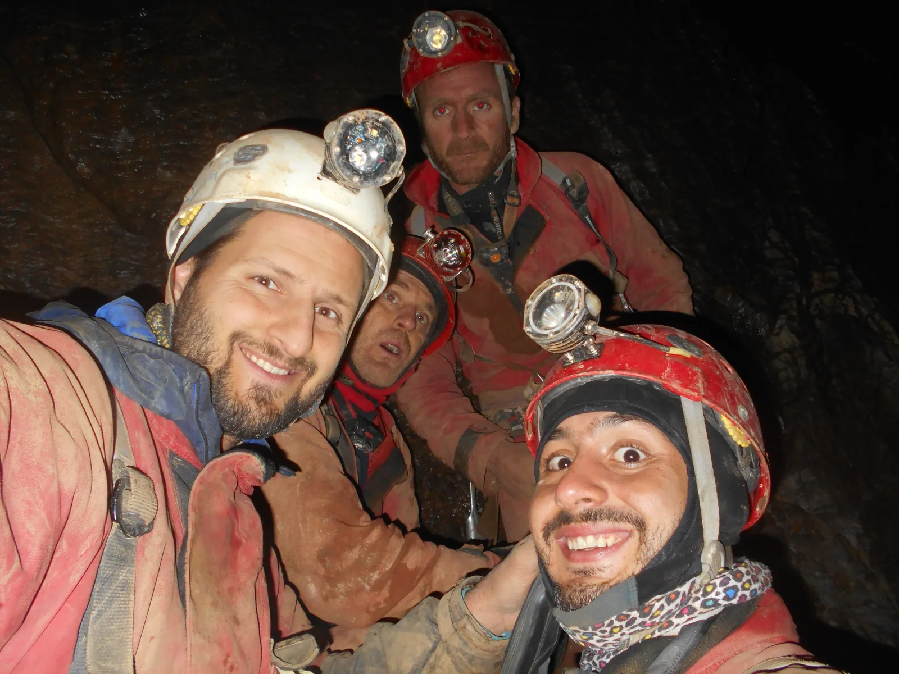

Jama Nedam - nova hrvatska tisućica!
Jedva da je prošlo sedam dana od istraživanja jame Nedam u kojem se stalo pred vertikalom na dubini od -920 metara i razumljivo da je speleološki i istraživački poriv bio toliki da se čim prije "sjuri i zakuca" ime…

Pripremio: Marjan Prpić 3D prikaz i nacrt: Marina Grandić Fotografije i video: Marijan Sutlović Priča sa 1000: Mak Sedmak
Jedva da je prošlo sedam dana od istraživanja jame Nedam u kojem se stalo pred vertikalom na dubini od -920 metara i razumljivo da je speleološki i istraživački poriv bio toliki da se čim prije "sjuri i zakuca" ime četvrte velebitske jame dublje od 1000 metara. Jurišna ekipa u sastavu Darko Troha, Slaven Boban, Marijan Sutlović i Mak Sedmak u vikend akciji 13.-15.9.2019. spustila se u gluho doba noći/jutra u bivak na -600m i nakon kratkog sna, krenula vidjeti što je ispod -920m.
Vertikala ispod te dubine završava neprolaznim suženjem 50-ak metara ispod, i prema vidljivim znacima iznimno je opasna zbog nakupljanja oborinskih voda koje taj dio jame ne može brzo progutati pa se tu voda diže preko deset metara. Na tom dijelu otkriven je fosilni kanal koji se uzdiže, pa su ga dečki isprečkali i ispenjali i nakon njega stali pred novom dubokom i širokom vertikalom. Nazvana je Daj-Dam i ide dalje! Suhi i topli(!) fosilni kanal će biti dobro mjesto za bivak i polazište za buduća istraživanja, a najbitnije što je sigurno mjesto od opasne vodene klopke ispod -920 metara.
Nakon nacrtanog novog dijela, ekipa je kratko proslavila gutljajem "vatrene vode", snimila kratki video i krenula penjati van, jer vikendu je kraj, u ponedjeljak se mora na posao ("Gdje s' bio u subotu? Aaaa...., spustio se malo na -1020 u jamu, istraživao, izašao van na pivu, i tako...). Njihov video iz nove tisućice pogledajte ovdje
[youtube https://www.youtube.com/watch?v=Vi4fw81eMZU&w=560&h=315]Ovim istraživanjem jama Nedam ima novu dubinu od -1.021 metar, sa duljinom od 1.989 metara. Iako je jasno da je to samo privremeno, još uvijek drži četvrto mjesto na popisu najdubljih jama Hrvatske, ispred nje je jama Velebita sa 1.026 metara. Na popisu najdubljih svjetskih jama smjestila se među prvih 100! http://www.caverbob.com/wdeep.htm
Osvrt: I na kraju, slušajući i čitajući sve radijske, televizijske, internetske odjeke o speleološkom-istraživačkom doprinosu koje je naša mala, složna zajednica napravila ove iznimne godine, prvenstveno ulažući samih sebe, svoj rad, svoj trud, svoje zdravlje, svoj novac i brigu svojih obitelji, ne možemo se ne dotaknuti i odnosa nadležnih institucija prema nama samima. Zar nije sramota da se na primjer, napravi kilometar asfalta ispred kojega će se doći naslikavati ministri, nakon svečanog domjenka već su zaboravili pošto su došli, a mi - speleolozi koji na gore opisani način pomažemo cijeloj zajednici davanjem stvarnih znanstvenih i inih spoznaja o onome što se nalazi ispod površine zemlje o kojoj se, budimo iskreni - većina ljudi i ne brine previše -mi smo marginalizirani na najjače. Zar nije sramota da mi kao istraživači, nakon svih godina i rezultata u istraživanjima tisuća i tisuća speleoloških objekata, koji riskiramo glave ne samo ulazeći nego i čisteći te iste objekte od nakupina smeća, otrovnog otpada i eksplozivnih sredstava, dragovoljno se prijavljujemo za postrojbe civilne zaštite i akcije u kojima ćemo riskirati svoju glavu spašavajući druge, da mi ne možemo imati pristup za daljna istraživanja u jednu Veternicu, ili nas se suptilno odbija, unatoč godišnjem dopuštenju nadležnog Ministarstva i dopuštenjima koje nas, da bi ih dobili, tretiraju kao potencijalne štetočine sa uvjetima na koje mi da bi se bavili speleologijom, sramotno moramo pristati -kao da i jesmo štetočine koje ovo rade da bi se okoristile? Do tog dana, kad se stvari "unormale" i poslože kako bi trebalo u jednoj zemlji koja teži biti uređenom i u kojoj će se izvrsnost vrednovati ne samo deklarativno, mi ćemo to trpjeti i istraživati i dalje. Jer za razliku od njih, mi smo ipak jedna mala složna zajednica, brinemo se jedni za druge, brinemo za Zemlju, za prirodu, brinemo za sve vas, pa i njih.
Prikaz odnosa Jame Nedam i obližnjih dubokih jama Sjevernog Velebita:Mak Sedmak: "Hvala svima"
Troha je davnih dana našao jamu i nije dala, a ovaj vikend se vratio u nju. Boban ju je širio, također prije dosta vremena, a kako nije davala, odlučio je i on dati svoj obol. Sutlović i ja smo pošli jer volimo šalu. Sve to zahvaljujući Marini i mnogim marljivim ljudima koji su dali svoj dio. Hvala im svima! Zbog njih smo mogli napraviti vikend akciju koja je rezultirala novom "tisućicom". Krenuli u petak, a na bivak došli u subotu ujutro. Nakon kratkog spavanca smo krenuli prema zadnjoj točci. Boban i Troha su hrabro krenuli postavljati, a Sutla i ja smo krenuli napraviti nacrt. Nakon 30m enuzijazam je splasnuo zbog naglog sužavanja aktivnog meandra. Dok sam bez opreme pokušavao gljiviti kroz neko prkno, čuo sam spasonosnu komandu da dođemo u fosilni jer IDE DALJE!
Nakon osnovnih priprema za nastavak napredovanja, Slavko je napravio izniman posao, iako je kvaliteta podloge bila vrlo loša, a svrdla još gora. Našli smo se opet u aktivnom sektoru i ostali paf. Meandar je sličan, ali predimenzioniran. Velika crna vertikala odmah nam je dala do znanja da smo došli do cilja. Malo rakije, puno sreće i onda penjanje do bivka. Došli smo u 7 ujutro, odspavali i krenuli.
Put na površinu je tekao dobro, a jama je sportska. Na izlazu nas je dočekala predivna noć, a jutro je bilo još krasnije. Umorni smo se kotrljali prema zagrebačkim životima, uz dobru muziku i spokoj.
Hvala vam svima! Vi koji ste prvi krenuli u rupe, koji ste prenosili znanje i koji ste bauljali po kukovima! Bravo za transportne ekipe, bravo za obitelji koje puštaju svoje članove da troše vrijeme, pare i živce, bravo za društvo i bravo za hrabrost, požrtvovnost i volju!
_____________________________________________________________________ Više o prethodnim istraživanjima sa SOV portala: "Nedam je pokleknula" - Marina Grandić "Nedam na -740, ide dalje." "Nedam blizu -1000!" - Marina Grandić [gallery ids="2722,2723,2725,2726,2709" type="rectangular"]